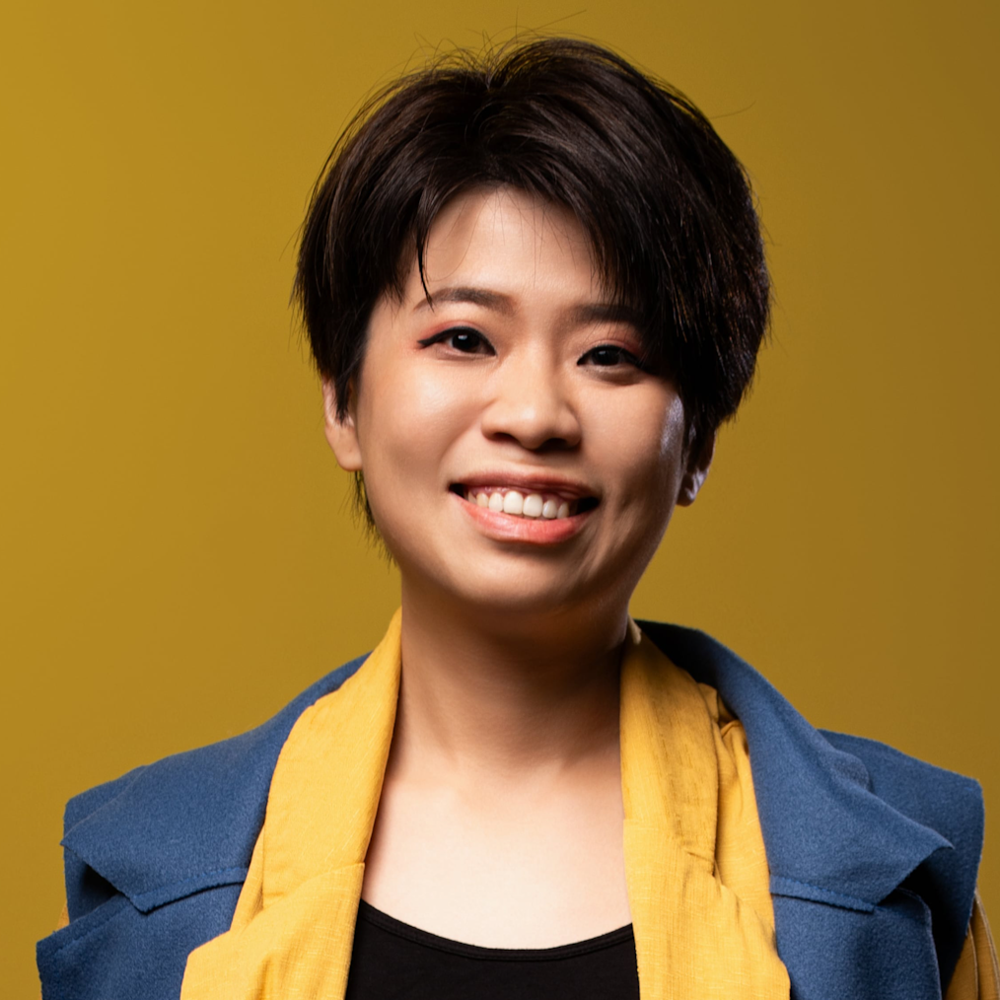
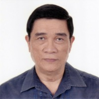

★
Opening & Keynote Speakers
Welcome, Keynote Address & Closing Remarks
Hon. Ma. Josefina "Joy" Belmonte
Welcome Address
Mayor of Quezon City
Philippines
BL
Undersecretary Blesila Lantayona
Keynote Address
Department of Trade and Industry — Regional Operations Group
Philippines
Sec. Lope B. Santos III
Event Overview & Lead Convenor
Director General, National Anti-Poverty Commission (NAPC)
Philippines
MV
Undersecretary Mary Rose Villaflor
Closing Remarks
National Anti-Poverty Commission (NAPC)
Philippines
1
Panel 1
Public, Private & Civil Society Partnership in Building the SSE Ecosystem

Ms. Aude Saldana
Moderator
Secretary General, Global Social and Solidarity Economy Forum (GSEF)
International
Panel 1 · Panel 8
YK
Mr. Young Kim
Co-Moderator & Speaker
Executive Director, Association of Korean Local Governments for Social Economy and Solidarity (SSEGOV); Chair, GSEF Continental
South Korea
Panel 1 · Panel 8

Dr. Bayu Krisnamurthi
Speaker
Executive Chair, Bina Swadaya Foundation
Indonesia
NF
Ms. Nur Farah Ara Ezzaty Adb Aziz
Speaker
Director of Project Management Department, All-Party Parliamentary Group Malaysia on SDGs (APPGM-SDG)
Malaysia

Prof. Carlo S. Sagun
Speaker
President & CEO, Bayan Family of Foundations (BFF)
Philippines
Panel 1 · Panel 4 · Panel 8
2
Panel 2
ASEAN SDG-SSE Roadmap 2026–2030: Components & Results of Stakeholder Mobilization

Ms. Zoel Ng
Moderator
Director, MySDG Academy
Malaysia

Dr. Eri Trinurini
Speaker
Chair, Asian Solidarity Economy Council (ASEC)
Indonesia
MA
Ms. Maria Teresa Arca-Guardiano
Speaker
Officer-in-Charge, Special Projects Division, QC Public Employment Service Office
Philippines
VK
Dr. Victor Karunan
Speaker
Senior Visiting Lecturer on International Development Studies, Chulalongkorn University
Thailand
SM
Ms. Sandra Moreno Cadena
Speaker
Executive Secretary, Intercontinental Network for the Promotion of the Social Solidarity Economy (RIPESS)
International / RIPESS
3
Panel 3
Achievements & Impact of Poverty Reduction Programs: Country Experiences
Moderated by Sec. Lope B. Santos III (NAPC). Also featuring representatives from NAPC Office of the Vice Chairperson for the Basic Sectors and the Department of Social Welfare and Development.
JD
Ms. Jiao Dian
Speaker
Deputy Director General, International Poverty Reduction Center in China (IPRCC)
People's Republic of China
SH
Datin Sri Prof. Dr. Suhaiza Hanim Dato Mohamad Zailani
Speaker
Director, Ungku Aziz Centre for Development Studies (UAC), Universiti Malaya
Malaysia
SS
Ms. Suntaree H. Saeng-ging
Speaker
Executive Director, HomeNet Southeast Asia (HNSEA)
Southeast Asia
4
Panel 4
Innovations in Financing for SSE Entities
JC
Ms. Jinkyung Choi
Moderator
Senior Program Manager, Impact Financing & International Relations, Korea Social Value and Solidarity Foundation
South Korea
PG
Mr. Philippe Guichandut
Speaker
Secretary General, Fondation Grameen Crédit Agricole (Credit Agricole Grameen Foundation)
France
UP
Mr. Upendar Poudyal
Speaker
Regional Representative for Asia-Pacific, Global Alliance for Banking on Values (GABV)
Nepal
CC
Mr. Clint Coo
Speaker
Regional Manager – Asia, GSG Impact
Thailand
Also featuring Prof. Carlo S. Sagun (BFF, Philippines).
5
Panel 5
Conducive Public Policies for Strengthening the Social Solidarity Economy

Dr. Benjamin R. Quiñones, Jr.
Moderator
Founder, Asian Solidarity Economy Council (ASEC)
Philippines
Panel 5 · Panel 8
MP
Ms. Marta Perez Cuso
Speaker
Economic Affairs Officer, United Nations Economic and Social Commission for Asia and the Pacific (UN-ESCAP)
UN-ESCAP
YP
Mr. Yvon Poirier
Speaker
Special Advisor on Advocacy and Governance, Intercontinental Network for the Promotion of the Social Solidarity Economy (RIPESS)
International / RIPESS
MY
Ms. Mona Celine Marie V. Yap
Speaker
Department Head, QC Small Business Cooperatives Development and Promotions Office
Philippines
RO
Dr. Rene Ofreneo
Speaker
Professor Emeritus, University of the Philippines; President, Freedom from Debt Coalition
Philippines
KA
Dr. Khairil Ahmad
Speaker
Director, MySDG Centre for Social Inclusion
Malaysia
Panel 5 · Panel 7
6
Panel 6
SSE, the SDGs, and the Care Economy: Drawing Connections for an Enabling Policy Environment
RM
Ms. Rosalyn Mesina
Moderator
Country Programme Coordinator, UN Women Philippines
Philippines / UN
AT
Prof. Amaryllis T. Torres
Speaker
Philippine Representative, ASEAN Commission on Women & Children
Philippines / ASEAN
NV
Dr. Nathalie Verceles
Speaker
Professor, Department of Women and Development Studies, University of the Philippines – College of Social Work and Community Development
Philippines
PJ
Ms. Primar Jardeleza
Speaker
Council Member, NAPC-Workers in the Informal Sector Council; President, HomeNet Philippines
Philippines
TS
Dr. Teo Sue Ann
Speaker
Director of the Parliamentary Policy Advocacy Department, All-Party Parliamentary Group Malaysia on SDGs (APPGM-SDG)
Malaysia
7
Panel 7
Innovations in Social Impact Assessment of SSE Entities
HC
Mr. Hobi Cortes
Moderator
Executive Director, Bayan Innovation Group
Philippines
RB
Mr. Rodmark Barriga
Speaker
President, Society for the Advancement of Professional Social Entrepreneurship (SAPSE)
Philippines
RS
Dr. Rajan Samuel
Speaker
Managing Director, Crowdera Foundation
Singapore
Also featuring Dr. Khairil Ahmad (MySDG Centre, Malaysia).
8
Panel 8
Way Forward: Future Direction of Partnerships in Advancing the ASEAN SSE-SDG Roadmap
Moderated by Sec. Lope B. Santos III (NAPC). Featuring all Panel Moderators plus:
CS
Prof. Carlo S. Sagun — BFF
BQ
Dr. Benjamin R. Quiñones, Jr. — ASEC
AS
Ms. Aude Saldana — GSEF
YK
Mr. Young Kim — SSEGOV / GSEF Continental